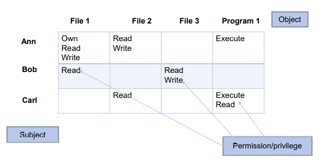
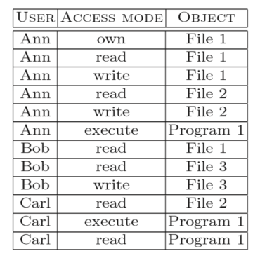
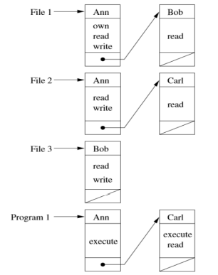
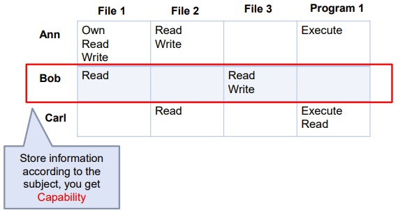

TDT4237 - Software Security and Data Privacy
Links
Lecture 1: Security principles
Some examples of threats and attacks
- Web defacement: Replace legitimate pages with illegitimate ones
- Propaganda, etc.
- Infiltration, or control hijacking
- SMS app virus, Saudi Arabia power plant
- Phishing: Spoofed site that looks real
- Fake emails, SMSs. Often used to steal personal information
- Data theft/loss:
- LinkedIn/Twitter emails/passwords databases hacked
- Denial of Service (DoS): flood servers with packets, causing it to drop legitimate packets and become unavailable to real users
- TDT4237 course website
- Ransomware: Encrypt data, requiring the user to pay to unlock their data. Common today, after the introduction of cryptocurrencies.
- Nordic Hotels doors, DNV ship software
Basic security goals
- Confidentiality: keep somthing secret
- Accomplished with cryptography, authentication, authorization
- Integrity: avoiding tampering of data. Data integrity = no corruption. Control integrity = no control hijacking.
- Accomplised with hashing (sometimes)
- Availability: system uptime, response time and storage
- Privacy: the right to be left alone
- GDPR
- Accountability:
- Requires secure timestamping and data integrity of logs
- Non-Repudatiation: two parties cannot deny that they have interacteed with each other. A trusted 3rd party can be used
- Generate evidence, receipts
Security recommendations
- Secure the weakest link
- Practise defense in depth, use layers of defence
- Fail securely, expect failure of security features
- Compartmenalize, separate systems*
- Be reluctant to trust, don't trust code libraries, don't trust users
- Follow the principle of least privilege, only provide minimal necessary access
- Keep it simple, complexity creates vulnerabilities
- Promote privacy, "nice to have" vs. necessary information
- To hide secrets is hard, a fault of security by obscurity
- Use your community resources, share known vulnerabilites
Lecture 2: OWASP Testing Guide - part one
Information gathering
Why information gathering?
- Attacker
- A map to attack
- Look for low hanging fruit
- Improve efficiency
- Developer/internal tester
- Decide test scope, coverage, prioritization
- Improve test efficiency
What information to gather?
- Application structure
- All pages you have found in the application
- Including subdomains
- Any external links
- Trust zones
- Needs authentication vs. open
- Data flow within the application, e.g.,
- Parameters and value
- Get and post
- Infrastructure or platform, e.g.,
- Web server (WSTG-INFO-02)
- Applications on the webserver (WSTG-INFO-04)
- Application entry points (WSTG-INFO-06)
- Execution path through application (WSTG-INFO-07)
- Web application framework (WSTG-INFO-08)
Tools for information gathering
- Website copier (e.g., HTTtrack, VisualWget)
- Web debugging proxy server (e.g., Firefox Developer Tools, Fiddler)
- Tool sets (e.g., Kali Linux, Burp Suite and OWASP Zap)
Injection attacks
All input is evil. - Michael Howard, Microsoft
- SQL injection
- Blind SQL injection
- Xpath injection
- …
SQL injection countermeasures
- Blacklisting
- Whitelisting
- Escaping
- Prepared statement & bind variables
- Mitigating impact
Session management attacks
Why session management?
- HTTP is stateless
- Impossible to know if Req1 and Req2 are from the same client
- Users would have to constantly re-authenticate
- Session management
- Authenticate user once
- All subsequent requests are tied to the user
Where to store session token
- Embed in all URL links (??)
https://site.com/checkout?sessionToken=1234 - In hidden form field (??)
<input type= “hidden” name = “sessionToken” value =“1234”> - Browser cookie
setcookie: sessionToken = 1234
Session management attacks
- Session token theft
- Session token predication attack
- Session fixation attack
Lecture 3: OWASP Testing Guide - part two
XSS
- The attacker injects malicious script into your page
- The browser thinks it is your legitimate script
- Can be used for session token theft
Reflected vs Stored
- Reflected XSS
- JaveScript injected into a request
- Reflected immediately in response
- Stored XSS
- Script stored somewhere (i.e., DB) in server
- Script injected into a request
- Reflected repeatedly
- More easily spread
Mitigation
- Sanitize data
Cross-Site Request Forgery (CSRF)
Server-Side Request Forgery (SSRF)
- XML External Entities (XXE) Attack
Software and data integrity failure
Identification and authentication failure
Authentication
- The process of verifying who you are
- Three general ways
- Something you know (password)
- Something you have (phone)
- Something you are (biometrics)
Hashing
- Salt
- Pepper
Other password security techniques
- With hash, pepper, and salt, the dictionary attack is harder, but not impossible
- Other authentication countermeasures
- Filtering
- Limiting logins
- Aging password
- Last login/ Protective monitoring
- One-time password
- Two-factor/two-channel authentication
Security logging and monitoring failures
- Auditable events, such as logins, failed logins, and high-value transactions are not logged
- Warnings and errors generate no, inadequate, or unclear log messages
- Logs of applications and APIs are not monitored for suspicious activity
- Logs are only stored locally
- Appropriate alerting thresholds and response escalation processes are not in place or effective
- Unable to detect, escalate, or alert for active attacks in real time or near real time.
Clickjacking
- Attacker overlays transparent frames to trick user into clicking on a button of another page
- Defend against Clickjacking
- X-Frame-Options : deny completely disables the loading of the page in a frame,
Lecture 4: Cryptography
You are expected to learn basic concepts of popular cryptography algorithms and how to use them
- Ciphers, e.g., AES, 3DES
- Cryptographic hash function, e.g., MD5, SHA-1, SHA-2
- Public key cryptography, e.g., RSA, ECDSA
Secure communication has two steps
- Establish a shared secret key
- Transmit data using the shared secret key
Lecture 5: Autorization and stuff
Access control
- Access control policy
- Definition of what it means to be secure
- A statement of what is, and what is not, allowed
- Access control model
- A succinct and formalized representation of security policy and it working
- Access control mechanism
- Low-level functions that implement the controls imposed by the policy and the model
- Awareness
- Education
- Management
- Operation
Privilege creep: People end up wih more access than necessary
Access control on different levels
- Application
- Middleware
- Operating system
- Hardware
Access control models
- Discretionary access control (DAC)
- Mandatory access control (MAC)
- Role-based access control (RBAC)
- Attribute-based access control (ABAC)
- Context-based access control (CBAC)
- Graph-based access control (GBAC)
- Lattice-based access control (LBAC)
- Organization-based access control (OrBAC)
- Rule-set-based access control (RSBAC)
Comparison
| x | Advantages | Disadvantages |
|---|---|---|
| DAC | Simple and efficient access right management. Scalability. | Weak control over information flow. |
| MAC | Strict control over information flow. Strong exploit containment. | Cumborsome administration. |
| RBAC | Easy authorization management. Maps to real-world role hierarchy. |
Discretionary access control (DAC)
- Owner of a resource decides how it can be shared
- The owner can choose to give read, write, or other access to other users
- Vulnerabilities of DAC
- Does not distinguish between user and process
- Vulnerable to a process executing malicious programs (Trojan Horse) exploiting the authorization of the user
| Access control implementation | Figure |
|---|---|
| Access control matrix |  |
| Authorization table |  |
| Access control list (ACL) |  |
| Capabilities |  |
Mandatory Access Control
- Unlike discretionary access control (DAC) where users can take their own access decisions about their files
- Mandatory access control (MAC) means that systems enforce a security policy independent of the user’s action
- Enforce access control on the basis of regulations mandated by a central authority
- Access class is assigned to each object and subject
Bell-LaPadula model
- Ensures confidentiality
- Levels of confidentiality
- No read up (NRU)
- No write down (NWD) (* property)
- Don't write something that should be secret
- Strong *: only allows operations on the same level
Biba model
- Ensures integrity, source of truth
- Levels of integrity (/trustwortyness)
- No write up (NWU)
- No improper modification of high integrity objects from the low classified subject
- No read down (NRD)
- High integrity object is not contaminated due to reading and using unreliable data
- No write up (NWU)
Role-Based Access Control
Attribute Based Access Control
- RBAC is for coarse-grain access control
- ABAC is for fine-grain access controls (more difficult to use correctly )
- RBAC before ABAC (who can see what module BEFORE what can they see inside a module)
Authentication and Single Sign On (SSO)
SSO Trends
- From SOAP/XML to more lightweight HTTP/JSON
- Social Sign-in (Facebook, Google, etc. )
- OpenID Connect (Authentication) and OAuth 2.0 (Authorization)
- From authentication only to API authorization (and data access)
Control hijacking
- Take over target machine (e.g., webserver)
- Execute arbitrary code on target by hijacking application control flow
- Compromise Confidentiality, Integrity, Availability
- Targets mainly C/C++ code
- Buffer overflow attacks